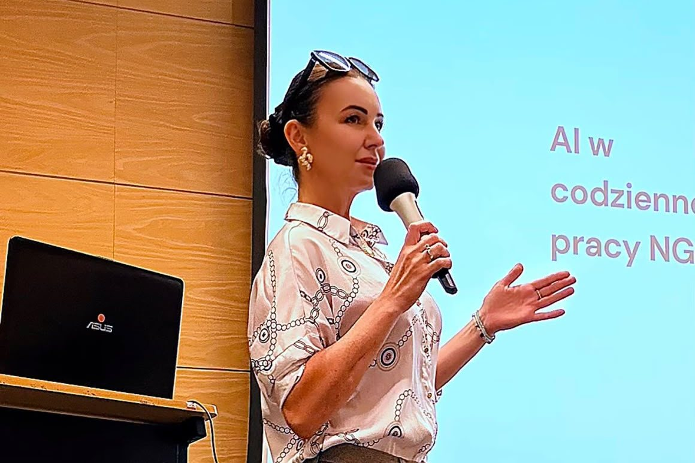
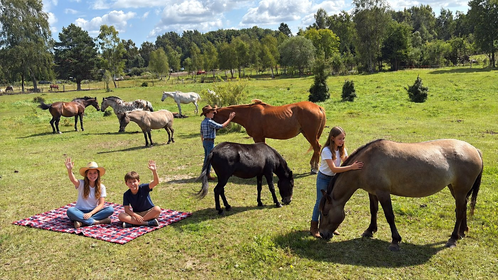
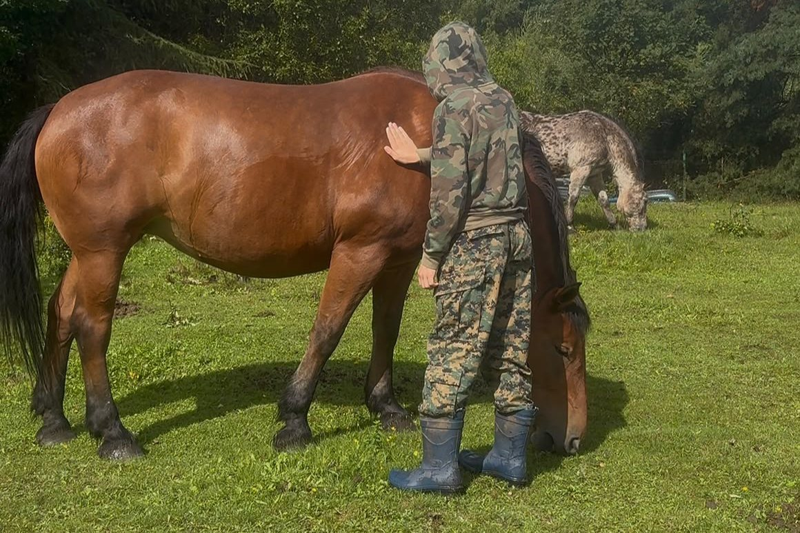
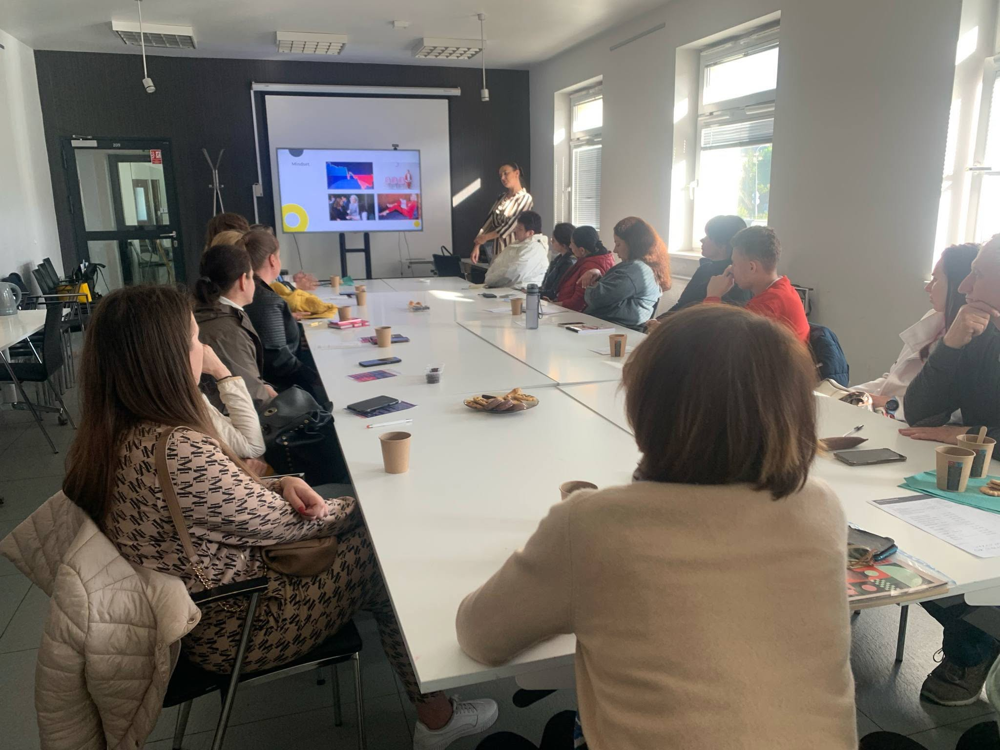
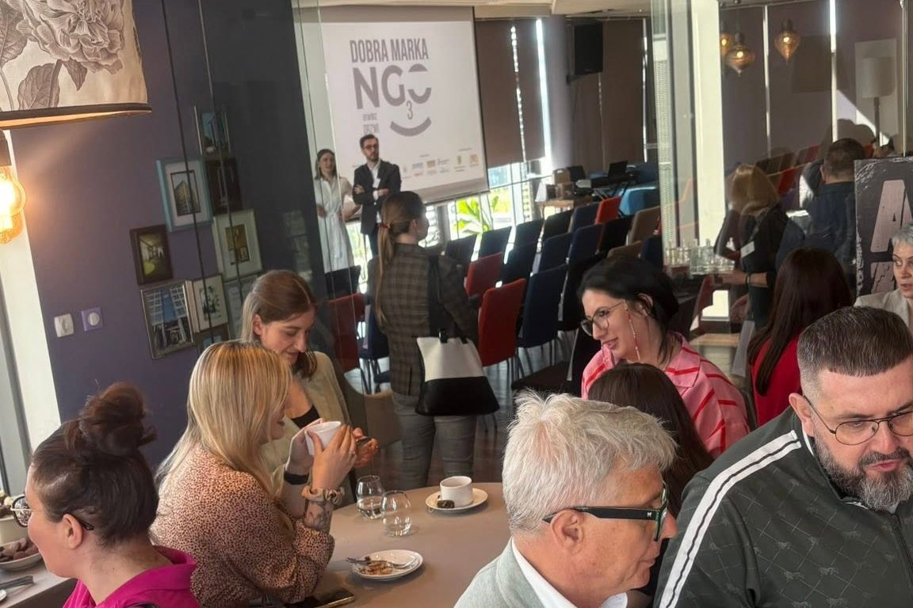
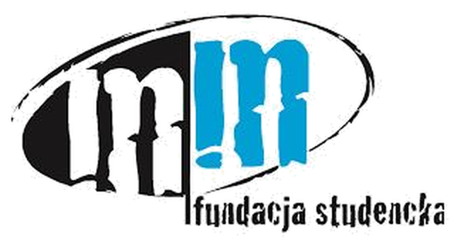

Gdyńskie Forum Organizacji Pozarządowych
Relację z forum znajdziesz na stronie gdynia.pl. Czytaj więcej

Pomóż dzieciom, które świat widzą inaczej – daj im szansę na przyszłość!
Wesprzyj nasWspółpraca dla firmRazem z przedsiębiorcami tworzymy edukację bez barier dla dzieci z niepełnosprawnościami. Wspieramy rozwój i samodzielność tych, którzy najbardziej tego potrzebują, tak aby mogły być sobą w świecie, który je akceptuje.

Wsparcie dopasowane do potrzeb dziecka, dzięki któremu świat staje się bardziej zrozumiały.
Zajęcia, na których dzieci budują pewność siebie i nawiązują pierwsze przyjaźnie.
Dodatkowa nauka, która pomaga dogonić rówieśników i uwierzyć we własne siły.
Współpraca z nami to czytelny, mierzalny sposób na działania odpowiedzialnego biznesu. Dobierzemy formę wsparcia do możliwości Twojej firmy.
Darowizna jednorazowa lub regularna na konkretny cel: zajęcia, warsztaty, wydarzenia dla dzieci.
Współorganizacja pikników, warsztatów i spotkań, z widocznością marki partnera.
Sprzęt, materiały edukacyjne, usługi lub zaangażowanie pracowników Twojej firmy.
Napisz do nas, a odpowiemy z propozycją dopasowaną do Twojej firmy.

Relację z forum znajdziesz na stronie gdynia.pl. Czytaj więcej

Dzieci ze Szkoły Podstawowej nr 46 w Gdańsku spędziły wyjątkowy dzień na świeżym powietrzu, w otoczeniu przyrody i zwierząt. Podczas pikniku nie zabrakło gier i zabaw w kowbojskim stylu, wspólnej aktywności oraz jednej z największych atrakcji – przejażdżek konnych.
Ważną częścią spotkania był swobodny, bezpośredni kontakt z końmi. Dzieci mogły je obserwować, głaskać i poznawać ich zachowania. Rozmawialiśmy o tym, jak traktować zwierzęta z szacunkiem, jak konie komunikują się ze sobą i jak funkcjonują w stadzie. Stało się to również okazją do zastanowienia się nad podobieństwami między relacjami w stadzie a relacjami w grupach rówieśniczych – współpracą, komunikacją, granicami i wzajemnym zaufaniem.
Piknik został przygotowany z myślą o dzieciach o zróżnicowanych potrzebach rozwojowych i edukacyjnych, w tym m.in. z ADHD. Kontakt z naturą i zwierzętami, ruch oraz wspólna zabawa stworzyły przestrzeń do integracji, budowania relacji i rozwijania empatii wobec zwierząt. A wszystko to w atmosferze dobrej zabawy i prawdziwej kowbojskiej przygody!

Podczas „Warsztatów naturalnych” dzieci poznawały świat poprzez bezpośredni kontakt z przyrodą, zwierzętami i otaczającym je środowiskiem. Zajęcia odbywały się na świeżym powietrzu, w spokojnej przestrzeni sprzyjającej aktywności, wyciszeniu i budowaniu poczucia bezpieczeństwa.
Warsztatom towarzyszyły zajęcia z elementami hipoterapii. Kontakt z koniem, jego ruchem i spokojną obecnością dostarczał dzieciom wielu doświadczeń, jednocześnie ucząc uważności na potrzeby zwierząt, szacunku i odpowiedzialności. Wspólne aktywności sprzyjały także rozwijaniu koncentracji, komunikacji, współpracy i empatii.
„Warsztaty naturalne” zostały przygotowane z myślą o dzieciach o zróżnicowanych potrzebach rozwojowych i edukacyjnych. Połączenie natury, obecności koni, ruchu i wspólnego działania stworzyło przyjazną przestrzeń, w której każde dziecko mogło uczestniczyć w zajęciach we własnym tempie.

Dzielimy się wiedzą z młodymi przedsiębiorcami. Piątkowe lekcje o biznesie i marce osobistej w Stacji Kultura organizowane przez Stowarzyszenie OVUM mają coraz więcej słuchaczy.

„Dobra Marka NGO” to cykliczna konferencja edukacyjna, która wspiera organizacje społeczne w budowaniu profesjonalnej, spójnej i wiarygodnej komunikacji – wewnętrznej i zewnętrznej.
Pierwsza edycja, zatytułowana „Czas działać!”, odbyła się w grudniu 2021 roku i skupiła się na znaczeniu wizerunku NGO w kontekście fundraisingu oraz współpracy z biznesem. Druga edycja, „W praktyce”, zorganizowana we wrześniu 2022 roku, dostarczyła uczestnikom konkretnych narzędzi i strategii, takich jak skuteczne wykorzystanie LinkedIn, budowanie relacji z mediami czy monitoring internetu.
Jesteśmy dumni, że jesteśmy częścią tej wspaniałej społeczości gdańskich NGO.

Jesteśmy młodą fundacją, dlatego musimy poczekać dwa lata, zanim będziemy mogli ubiegać się o status OPP. Z pomocą przyszła nam Fundacja Młodzi-Młodym. Dzięki niej już teraz możemy korzystać ze wsparcia darczyńców, którzy mogą przekazać nam 1,5% podatku za pośrednictwem naszego partnera. Dowiedz się więcej

Wesprzyj zajęcia socjoterapeutyczne, warsztaty i lekcje wyrównawcze dla dzieci w spektrum autyzmu i z ADHD.
Wpłać na Zrzutka.pl
W swoim zeznaniu podatkowym wskaż numer KRS fundacji:
Cel szczegółowy: FUNDACJA SMG 29910
Wspiera nas Fundacja Młodzi-Młodym. Dowiedz się więcej